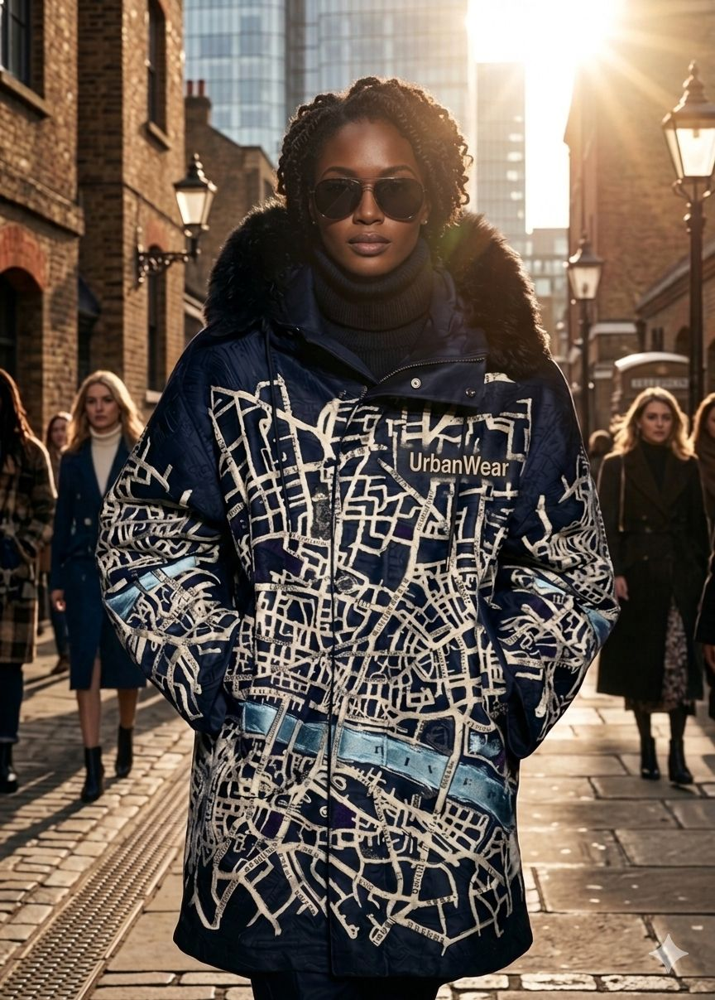
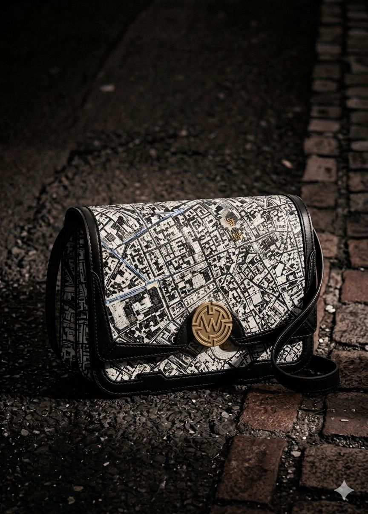
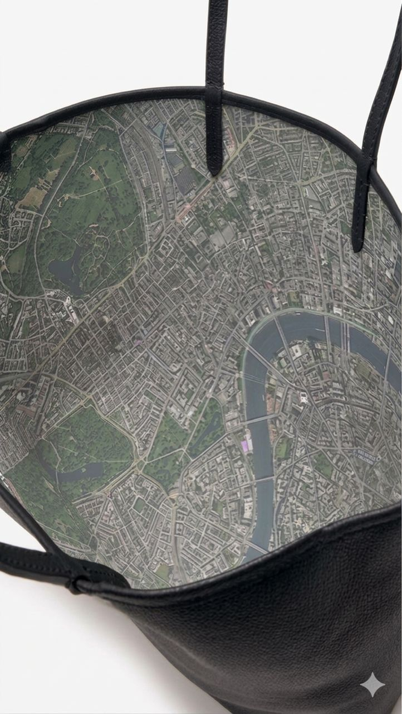
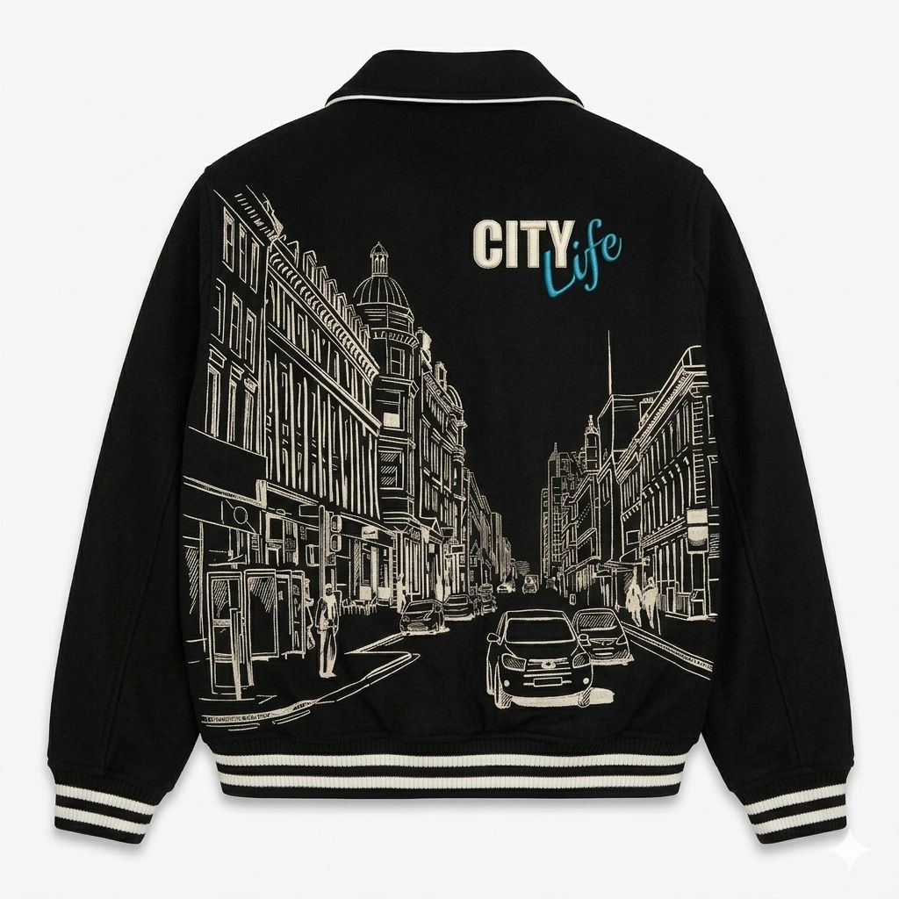

Est. 2025 · London
Born from
the city.
Urban Wear was built by people who live in cities, breathe the streets, and believe that where you are shapes who you are. We wear our coordinates.
Shop the Collection
Our Story
A brand built on city maps and midnight streets.
Urban Wear Clothing Co. was founded in London in 2025 with a single conviction: that city living is the most vivid form of culture, and it deserves clothing that honours that energy with equal sophistication.
Our founders grew up navigating A–Zs and tube maps, reading the city like a language. When they translated that obsession into fabric — printing London's street plan across a parka, embossing a city skyline onto the back of a varsity jacket — the response was immediate. The city had found its wardrobe.
"The map isn't just a print. It's a declaration — this is where I'm from, this is where I belong."
— Urban Wear Co-Founder
Every collection since has deepened that commitment. The city-map print has appeared in midnight navy on parkas, in tonal black on crossbody bags, and as a hidden interior lining visible only when you open your tote — a secret for those who know where to look.
We collaborate with premium textile mills, hand-embroider our UW emblems, and source our hardware in solid brass. Nothing is accidental. The city taught us that the best designs live in the details — in the grid of streets, the weight of a doorhandle, the texture of a cobbled lane.
What We Stand For
Three pillars. One city.
Craft Over Commerce
Every piece is designed to outlast the season. We refuse shortcuts — premium weight fabrics, hand-finished details, and hardware that will age with dignity rather than tarnish after a month.
City as Muse
We draw from the architecture, the maps, the skylines, the street-level energy of urban life. No generic prints, no trend-chasing. Every design is rooted in the specific geography of city living.
Community First
Urban Wear is built for the people who make cities worth living in — the creatives, the night walkers, the early risers. We give back to city arts programmes and community initiatives every season.



Materials & Process
Details that live beyond the trend.
Our city-map prints are developed in-house with specialist textile printing labs. The scale, contrast, and colour palette of each map is tuned to the garment — a parka demands a different print weight than a crossbody bag.
Hardware is solid brass, hand-lacquered and stamped with the UW seal. Linings are printed separately before being hand-cut and sewn to ensure the map registers perfectly — a process that adds hours to each piece.
Ready to Wear the City?
Find your piece.
From the city-map parka to the leather tote with the hidden London lining — every piece carries the city with you.